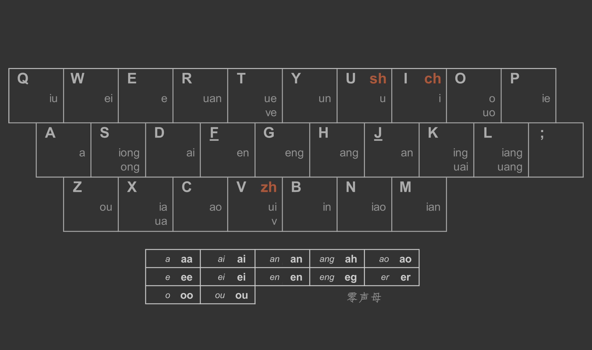
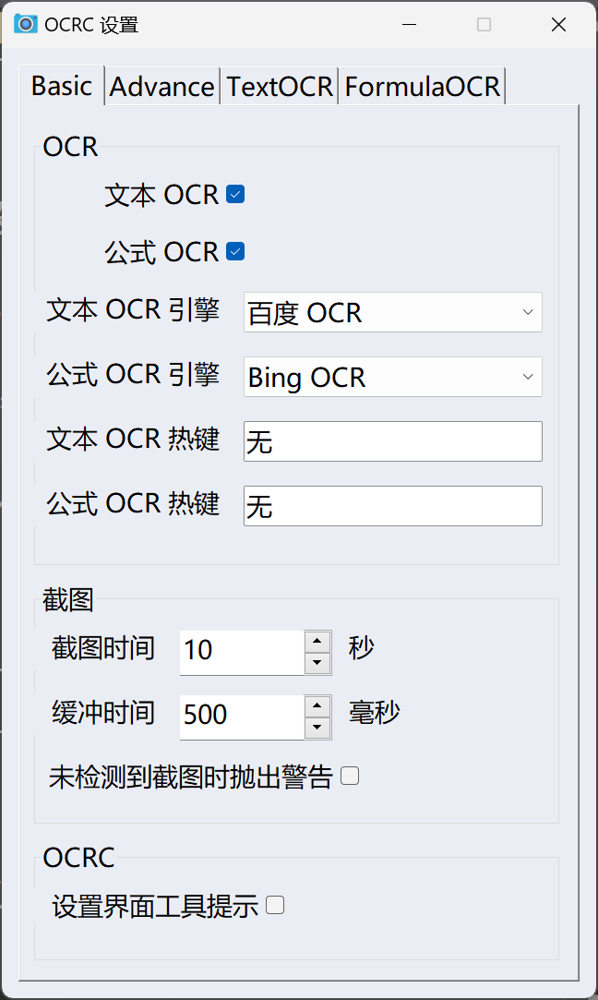
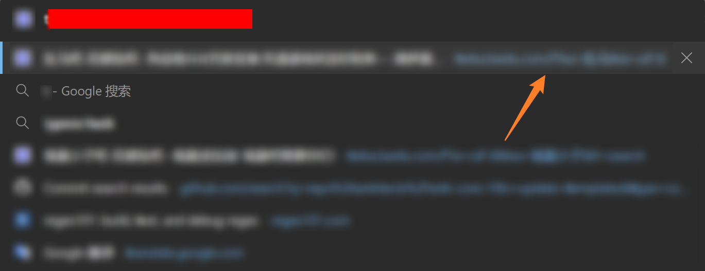

再见了，我可爱的 jk
双拼
早早就想学习双拼了，但一直拖延。高考后本来应该学的，顺便练习打字，但都最后无功而返。直到这周才去学习。
我学习的是「xnheulpb」方案。微软拼音输入法没有这个方案，我自己手动添加了，注册表对应 HKEY_CURRENT_USER\Software\Microsoft\InputMethod\Settings\CHS 的 UserDefinedDoublePinyinScheme0 项，值为 xnheulpb*2*^*iuvdjhcwfg^xmlnpbksqszxkrltvyovt。
打了半个小时，基本键位都记住了，现在就是看肌肉记忆了。
然而由于我本身打字速度和准确率都不高，因此现在打字速度非常慢，所以本篇内容可能会比较短。而昨天那篇，因为我赶时间，就暂时切换回了全拼。
虽然我已经记住了键位，但是可能有一些不常用的可能会遗忘，或者有时候脑子抽了。因此我将桌面背景换成了键位图，以便查看，同时激励我尽快学好双拼，赶紧把这个丑陋的背景换掉。

这其实就是我桌面的截图，并不是背景原图，只不过我不在桌面放图标罢了。
逝去的 jk
我最喜欢的 jk，已经逝去了。我不知道她的名字，也不知道她的年龄，但我知道她是个 jk，她是个女孩子，她是个人。
这是 Copilot 给的提示，莫名其妙的，就记录下来。
随便搜一个 StackExchange 的问题，例如这个 Other ways to exit Insert mode besides Escape，就提到了使用 jk 或 kj 退出 Insert 模式，进入 Normal 模式的方法。同时，在国内的许多教程中，也会建议进行下面的 mapping：
1 | inoremap jk <Esc> |
我不常用 kj，主要用的是 jk。
可以说是相当的方便，毕竟 Esc 不好按，而且终端下 Esc 是前缀键，非常不方便。而英文输入中基本不会出现 jk 这个组合，因此也不会出现误触。
而且标准指法下，j k 正好是最有力的右手食指和中指，按起来既快又舒服，还有别样的节奏感。
同时注意到中文输入中也少见 jk 这个组合，我印象中意外退出只有「快捷键」这个词 kjj，别的组合似乎比较常用的就是「技科」了，不过我一般「技科」是打全的，没怎么误触过。因此我使用 AutoHotkey 使得我在中文输入下也能通过 jk 退出 Insert 模式。
1 |
|
然而我也提到了，最近我在学习双拼，jk 这个组合不可谓少见。我就想着使用不可能的拼音组合，我发现的使用相同按键的大概只有 jj 和 tt。tt 不太习惯，因此更偏向于 jj。
然而这面临一个问题，jj 不一定是一个字，譬如说「看见」这个词就是 kjjm。因此为了避免误触，只好使用三连击的方式，即 jjj。但是失去了节奏感，于是我就想着寻求更好的方法。
网上有提到用 CapsLock，但是遗憾的是 CapsLock 已经作为 Snippets 的键了，而且这个键我已经配得很好了，不想再动了。
于是我把目光移向了键盘上最大的键——Space。尝试用 AutoHotkey 映射热字串 jk，如果检测到 Space 是按下的状态，就发送 BackSpace + Esc。
之所以要发送 BackSpace 是因为要去除输入的 Space。但是这个方案，从描述中也可以看出其不稳定之处。同时以这种方式退出了 Insert 模式，再次进入后原本是中文输入法，会变成英文输入法，非常麻烦。就抛弃了这个方案。
然后试过了 Shift + Space 的方案，还不错，但也有几个问题。
首先还是重中之重的问题，中英文切换问题，这个问题比上面还要严重一点。这个方案进入 Normal 模式后会变成中文输入法，同时回到 Insert 模式后会变成英文输入法，可以说是把所有的不便之处结合起来了。我测试了一下应该是微软拼音输入法使用 Shift 切换中英文的问题，因为我关闭 Shift 切换中英文后，这个问题就消失了。但是这个是万万动不得的，不然难道我要用 Ctrl 之类的来切换吗？
其次，我没想到 Shift + Space 这个组合键我还蛮常用的。主要是因为按下 Shift 键，比如 Normal 下用 A 进入行尾进行 Insert，按完 A 后我会先松 A，再松 Shift，但是先松掉的那只手很快会去按 Space，从而造成了误触。
因此这个方案也被我废弃了。尝试使用双击 Space 的方案。
但最终这个方案也被否决了，因我会造成 Space 的延迟。其实一点延迟也无什么所谓，但是如果按 Space + A，会导致 a 和空格偏移。我也没找到很好的解决方案，就放弃了。
最后只好额外添加一个 ; 双击的方案。不过这个方案跟 Snippet 的 short_math 有冲突。但很好解决，而且没啥负担，我就将 short_math 的触发键改为了 ,, 或 ，，。
但我最熟悉的无疑还是 jk，本篇博文切换了很多次模式，还是有一大部分用的是 jk。但是呢还是得形成一个新的肌肉记忆，所以我决定写完本篇博文就废掉了 mappings 里的 jk。
😭对不起 jk，你没有做错什么，你非常好用，我对你很满意，但是我不得不抛弃你，我怕我记忆里还留有你的影子，我怕我忘不了你，我必须抛弃你，请原谅我。
所以，就这样，这也是本篇博文标题和简介的由来。
再见了，我可爱的 jk。
AutoHotkey
我提到 AutoHotkey 的频率有点高，这类小脚本还是不要太过沉迷为好，应该多学点更有意义的东西。不过这次还是提一下比较好。
之前提及我在 WSL 简单迁移了一下 Windows 下 gVim 的配置，还遗留下来一个问题就是中英文输入法的切换。我也在这周进行了解决。
1 |
|
搜了一下无法做到在某个窗口激活时执行命令，只好使用 SetTimer 来弄了，希望不会对性能有太大影响。
可以说比较完美地实现了我的目标。目前唯一缺憾就是单独的 r 无法实现输入法的切换，因为单独的 r 不会更新 titlestring，因此我无法知道模式的切换。以及搜索时的切换也做不到，毕竟普通命令模式还是英文输入法，只是搜索时才切换成 Insert 模式的输入法，而显示模式都是 c，我无法区分。好在两个问题都不算大，已经令我很满意了。
这段代码用到了我自己的 IME 库。
1 | GetIMELang() { |
正如注释所说，兼容模式下 GetIMELang 返回值非常奇怪，中文有时候是 1 有时候是 1025，英文有时候是 0 有时候是 1024，我也没摸清楚规律。然后切换语言模式的函数有时候能生效有时候不能。因此我就不支持兼容模式了。
再加上兼容模式确实丑陋，我又切回新版了。但是我也提到过新版 gVim 下会有问题，而既然我都用 SetTimer 了，不妨再深入一下，一并解决了。
1 |
|
这个脚本为 gVim 和非 gVim 窗口设置了不同的输入法兼容模式状态，默认是 gVim 为兼容模式，非 gVim 为新版。同时也可以使用 Win + F1 来对两种窗口进行兼容模式的切换。
既然提到了这个热键，那就不得不提及 Run 里面各种奇葩的热键了。Run 为啥叫 Run 我也记不清了，但确实不知道更好的名字了，就沿用下去了。
1 |
|
Win + F 使用 Everything 搜索，可以说非常常用。
不过我在 Windows11 中使用发现有时候会触发 Feedback，当时（好像是 7 月）还交过一次，然后它说我是未成年人，无法反馈。我有点乐，搜了一下还发现一个更乐的东西。
所以，你们的意思是青少年不配提出意见吗？我要求微软给我个合理的解释，并作出相应得到补偿，以补偿我在这不愉快的使用中受到的心理伤害。否则我将寻求青少年保护机构的帮助对你们发起公诉。
我想我不太用得到这个功能，就卸掉了。Windows10 就没这个问题，也许是早就卸掉了？
在 11 会发现 AutoHotkey 有关 Win 的热键有时候会触发原本的功能，也许是因为我没关 UAC？以前我是关掉的，现在为了安全就一直保持默认，确实不方便了一点，但我也习惯了。
以前我是用 F8 进行 Snipaste 截图的，这些热键当时都是随便分配的，结果沿用至今。但 FKey 还是给更有意义的热键留着比较好，而且很多程序都会用到 FKey，因此我就想改为 PrintScreen。
但是出于我上面提到的原因，我映射 PrintScreen 后还是调起了默认的截图工具（不管是 Snipaste 设置还是 AutoHotkey 映射）。没找到好的解决方案，就使用 PowerToys 将 PrintScreen 映射为 ScrollLock，然后再为 Snipaste 设置 ScrollLock 为截图热键。
不过相当于废掉了 ScrollLock，但这个键我也没用过，也就无所谓了。
也是基于上面的理由，我把 OCRC 的热键也换了。换成了 Win + 1 和 Win + 2，没错，就是那么的随意，毕竟想热键也是一个技术活。不过我其实提到过不能映射 Win 的热键，但是我直接改配置文件就绕过去了，界面显示的是「无」。

不过也是有我上面提及的问题，比如我刚刚试了一下 Win + 1，打开了我任务栏第一个应用 Microsoft To Do。不过也算是少见现象，刚刚是我第一次触发。
绕远了。然后是 Ctrl + Space 切换代理。这个热键我觉得可以换一下，毕竟我现在不常切换代理。
Win + Shift + F1 切换双拼。还有一个 Win + Alt + Space 切换触控板，也就是左下方连着的三个按键。
有时候不想用触控板，例如形策课写作业，空间小，书只好放在键盘下，但是容易碰到触控板，这个时候就可以关闭了。
OJ
OJ commits 信息每次都要自己敲太麻烦了，Copilot 又不记得我上次怎么写的，每次瞎给建议。于是写了个 Snippets，自动生成 commits 信息。
本周 OJ 作业第一题，行为题。有一个
ant-hengxin 在作业截止之前把自己的 AC 代码上传到了 github 的公开仓库；
有点心虚，因此我现在截止前不 push 了，写完时只 commit，等截止后再 push。不过似乎看不出来我何时 push 的，只看得出来我在作业期间 commit 了。要真出事我似乎跳进黄河也洗不清啊。
行为题错了近 10 次，惭愧。最关键的是我眼瞎，导致我把唯三不确定的都试了才发现还有一个是错的。
最后一题还没 AC，时间超限了，我用了快排还超，估计是要用二分查找。不过现在累了，不想写，加上罚时已经爆掉了，也不着急像上次一样赶紧做完排在前面。等过几天，或者下周二看一下蚂蚁老师的视频，学习一下再做吧。
另外明天就要机试了，我还没机试过呢，既有点期待又有点紧张。祝我好运吧。
机试电脑配置要先关掉保存自动格式化，它默认格式化的格式与我的风格不一致，只会添乱。
然后自己弄几个简单的 mappings，复杂的也实现不了，也没啥必要。
1 | let g:mapleader = " " |
再次看到 jk，触景伤情啊。
打水
之前的杂记就想说了，结果一直忘记了，趁现在还有印象，赶紧写一下。
在数次打水花费 0.03元后，我决定研究一下收费规则。
最终我得出了重要的实验定理：
打水收费第一定理
打水收费 0.01元/10秒。
但同时我还注意到
打水收费第二定理
卡着 10秒时会开启第二次收费。
因此打一次水最好的时间是 8~9秒。
对于我 500mL 的水杯，同时需要较热的水，可以采取以下策略：
- 先接冷水。接大概 8~9秒，拔卡。收费 0.01元。
- 再接热水。接至壶满为止，拔卡。收费 0.01元。
由此可以实现 500mL 热水 0.02元，可以说是最优策略了。同时这个策略打水，水温也是非常适宜的：8秒热水时可以达到即打即喝的效果，非常滋润；9秒的热水可以有稍热的感觉，也是我高中最常喝的水温，也是无与伦比。
DDL
物理视频
我以为物理视频是期末作业，结果跟小组成员一碰头才知道居然是期中作业，11 月中旬就要交。
为了让我看起来没有摆烂，我主动领了字幕的工作。其实我也没搞过啥字幕，修改过一部分错字，稍微调过一点轴，或者是别的字幕的特效字幕迁移到另一个字幕。因此这个任务对我来说也算是一个挑战。
不过我也没打算做得多好，我初衷就是应付一下得了。不过可惜的是我们的组长相当有野心，只不过他的组员们比较摆烂。
好在一个晚上把拍摄工作完成了，我的垃圾笔记本居然还充当了摄像工作。不过我整理视频时发现笔记本摄像头不仅模糊，音质还不行，有的地方突然没声音了。可怜了我们后期工作的组长了。
字幕文字我已经录进去了，只差成品出来我调一下轴了。不过我们念台词跟剧本稍有不同，但我也懒得改了。
美育
这个月末就要交第一次作业了。而我习惯上将下一周中间的任务在本周周末完成（当然，只是习惯，并不是每次都能做到，相反，很多次都要拖几天），因此，明天实质上就是 DDL 了。而我现在还啥也作业都没写，而明天一定要做的还有英语作业，以及明天还有机试，我还得复习一下什么的。
不过放轻松，分流主要看的是 CPL，微积分，线代和信物。其他几门，我对学分也比较随意，能过就行了，别挂就行了。
微积分 & 线代
马上要期中考试了，笔记差了一大截。补估计是来不及了。
信物
最近讲热学，似乎又回到了讲分析力学的时候。笔记也落后一大截了。而且这个是下周五就考。
误会
上篇博文发牢骚，这篇需要对一些地方进行澄清。
Edge
Ctrl + W 用不了其实是我的问题。
恢复插件键盘映射时，我使用 Ctrl + W 关掉窗口，可能误点击了了某处，导致其被作为一个热键。
但要不是 Edge 吞了我的数据，我回去恢复映射吗？所以还是 Edge 的锅😄。
不过今天 Edge 又抽风了，不知道更新了啥，地址栏会有个红色方框遮住，估计是保护隐私什么的。
但是我没找到具体设置在哪里，搜索也没搜到，找更新日志也没找到。而且红色也太刺眼了吧。
而且这保护隐私功能甚是鸡肋，反而有时候阻碍了我的视线。就是保护隐私，也没起到：

可以看到，下面的提示栏还是应有尽有。
而且如果想要复制地址栏地址的一部分的话，选中的部分会变红，影响视野，也很不舒服。
次日更新
果然是 Edge Insider 的问题，昨天搜太早了还没看到有人反馈，今天就在 Reddit 上看到了：例如这个 Edge search bar has a red highlight blocking text。可惜的是除了回到稳定版外，似乎只能等待 Edge 更新了。
文件资源管理器
上周我还提到了文件资源管理器加载慢的问题，也证实了是 WSL 的问题。
实际上一开始我就怀疑是 WSL 的问题——我把 WSL 的 ~ 文件夹放到了导航栏——删掉就好了。只不过不知为何我迟迟没有尝试，硬是忍耐了好几周。
微信
上周我提到过我开了一个 issue，得到了作者积极的回应。
作者还给我发了一封邮件，让我可以加一下他的微信，一起交流一下。
这也是除了 Anki 前主要译者之外，第二个有人给我发邮件了，不过很简短。
其实说是交流，但我毕竟才疏学浅，只有他对我的指导罢了，我没有什么有意义的见解可以提供给他的。我也只是从一个普通用户的角度给他提的 issue。不过值得高兴的是，他给我 AutoHotkey 脚本的仓库 star 了。也是我目前 star 最多的仓库，虽然只有 2 个（第一个是 cgt 点的）。
说回到这微信，除了这位 showKeyBoard 的作者外，我的好友大部分都是见过面的：有亲人，有小学同学，有初中同学，有高中同学，有大学同学，有高中老师，有南大招生老师，有卖早餐的巩师傅，有照相馆的老板，有志愿服务的志愿者……当然还有几位（其实只有一位）是我没见过面的，我也不知道咋加了微信，也是深中的同学，但不是同班同学，我也不知道是哪个班的。似乎是高中开学前认识的？没什么印象了，算是个例外。
有必要澄清一下，所有我的微信好友都是看不了我的朋友圈的。因为我屏蔽了所有人，每次加好友顺便屏蔽一下。对外的口径就是我不发朋友圈。当然实际上不完全正确，我发了朋友圈，只不过还设置为私密，算是再上一道保险。
总共也就四篇，估计未来不会再发了，毕竟我有私博了（虽然一个多一直没弄摆记了，更何况自己写）。发布日期有一篇是 2022 年，其他三篇都是 2023 年的。2022 年的那篇是 5 月 25 日发的。2023 年的分别是 5 月 23 日、5 月 25 日和 8 月 18 日发的。
那就先这样吧。